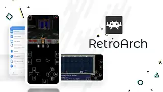
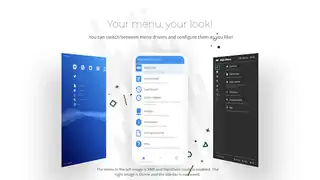

RetroArch
ألعاب
RetroArch is an open-source project that makes use of a powerful development interface called Libretro. Libretro is an interface that allows you to make cross-platform applications that can use rich features such as OpenGL, cross-platform camera support, location support, and more in the future. It
✓ ترخيص مفتوح (GPL-3.0-only) · آخر تحديث: 2025-11-22
1.22.2الإصدار
29.5 MBالحجم
GPL-3.0-onlyالرخصة
Open in Kanzتحميل APK (29.5 MB)
Download APK
SHA-256: 7120fd7a7f15b7a260366a8122c77070a80bc14bf28d34bc609439b2b52fdb64


امسح الكود لفتح صفحة التطبيق
Scan to open this app page
لو كنز مش متثبت عندك: نزّل متجر كنز.
Not installed? Get the Kanz store.